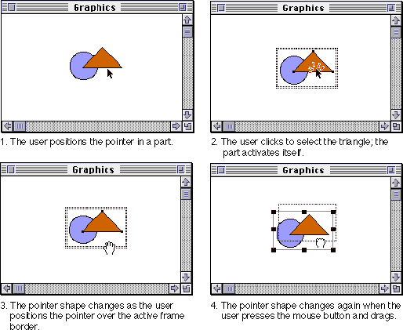
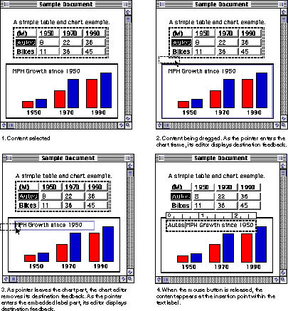
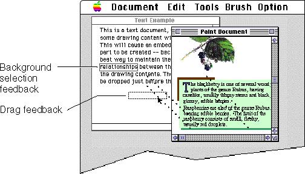

Using Drag and Drop
OpenDoc extends the Mac OS Drag Manager capabilities to provide direct manipulation of intrinsic content as well as embedded parts, allowing drag and drop between parts as well as between documents. This section describes how to implement the human interface for OpenDoc drag and drop. For human interface guidelines for the Drag Manager, see Macintosh Drag and Drop Human Interface Guidelines. For more information on how to implement drag and drop, see the section "Drag and Drop".With OpenDoc, the user can select any content and drag to move or copy it to another location (and possibly to create a link back to its source). Depending on the characteristics of the source and destination locations, the results of a drag can differ, as follows:
- By dragging, the user can move any selection, including the selected frame of an embedded part, from one location to another in a part.
- By dragging, the user can copy any selection, including the selected frame of an embedded part, from one part to another or from one document to another.
- The user can drag a background selection from an inactive part to an active part, or from an inactive window to the active window, without first activating the inactive part or window.
- When a part window is open, the user can create a separate document by dragging any of the window's embedded parts or any of its content to the desktop. This process creates a new document, represented by an icon on the desktop.
- The user can drag any desktop icon representing an OpenDoc document (or even a conventional, non-OpenDoc document) into an open document window or part window, embedding a copy of the document as a part in the window.
Starting a Drag Operation
The user initiates a drag by pressing the mouse button while the pointer is over a draggable item (such as an element of intrinsic content, an embedded part, a selection, or a background selection) and then moving the pointer more than 3 pixels before releasing the mouse button. You provide an outline of the content, and OpenDoc displays a dotted outline representing the content as the user drags it (shown in drawing 4 in Figure 14-9).The user can drag an active frame by its border, or a selected or bundled frame from anywhere inside it. When the user positions the pointer over the active frame border, the part's containing part changes the pointer to the open-hand pointer. When the user presses the mouse button to drag the frame, the active part becomes a selected part. The containing part, now the active part, displays the closed-hand pointer until the user has finished moving the frame and its content. Figure 14-9 shows the pointer changes that take place as a user activates and starts to drag a frame.
Figure 14-9 Pointer changes as a frame is moved

If the start and end of the drag operation are within the same part, the containing part simply repositions the frame and its content. If the user drags the part to a different part or document, the destination part makes a copy of the part and displays it in its new location (unless the user forces a drag-
move). After the move is complete, the moved or copied frame should be displayed in a selected state, and its containing part should be the active part.Dragging behavior is much the same whether or not the source part for the drag is in the active window. Figure 14-10 shows a selected spreadsheet cell being dragged in an active window.
Figure 14-10 Dragging content in an active window

Figure 14-11 shows a text selection being dragged within an inactive window. The user feedback is similar to that of Figure 14-10, except that a background selection is being dragged.Figure 14-11 Dragging content in an inactive window

If the user releases the mouse button without moving the pointer more than
3 pixels, no dragging occurs. In this event, your part should follow the activation guidelines noted in the sections "Activating Parts"Providing Destination Feedback
OpenDoc allows multiple drop targets within a document--that is, the parts in a document may individually choose whether or not to receive a drop. Your parts need to provide appropriate drop feedback so that the user can identify where dropping is permitted.If your part is an eligible drop target, it should display destination feedback to that effect whenever the user drags content into its frame. The feedback should match your part's active shape, as shown in Figure 12-20.
You can also selectively highlight individual items of intrinsic content as the user moves the pointer within your frame. For example, you could highlight an icon or display an insertion location that indicates where dropped content will appear.
When the pointer moves outside of your eligible target, remove the destination feedback. If the user releases the mouse button when the pointer is over an eligible drop target, remove the feedback and either embed or incorporate the new content.
Display destination feedback only if your part can accept dropped content. If your part cannot accept any of the data being dragged, do not display destination feedback and do not accept the drop. If a user has initiated a drag within your active part, don't display destination feedback around the frame. It's necessary to show feedback only when the pointer moves outside the active part. However, do show destination feedback if the user drags outside of the source frame and then back inside.
If the user drags across windows into your part, display the destination feedback, but don't change window ordering until the user releases the mouse button.
Dropping
When the user releases the mouse button after dragging, OpenDoc stops tracking the drag feedback and notifies the destination part of the drop. The destination part accepts the data, hides its destination feedback, activates itself (if not already active), displays its menus and palettes, and selects the dropped content. The previously active part no longer has the active frame border; OpenDoc now draws it around the destination part. See the section "Where to Place Transferred Data" for rules on placing dropped data and displaying selection feedback.As noted previously, dragging content from a document to any location in the Mac OS Finder other than the Trash causes a copy of the content to be made. This copy appears as a separate document with the same part icon as the part from which the content was dragged, and a name that consists of the part category of the dragged content plus a unique number, such as "Styled Text 1". If the dragged content consists of a single embedded part that already has a name, OpenDoc gives the new document the same icon and same name as the dragged part. If the name conflicts with another document at the drop location, OpenDoc prompts the user to either cancel the drop or replace the identically named document. If your part is the source of a drag, be sure to export the part name with any of your embedded parts that are dragged. See "Initiating a Drag"
Force-Move and Force-Copy
OpenDoc notifies the destination part whether dropped data it is receiving has been moved or copied from its source. By default, dragging within a document is a move, whereas dragging into or out of a document is a copy. The user can override those defaults in this way:
- When dragging content within a document, the user can force a copy operation by holding down the Option key while dragging. The data is copied and duplicated at the new location.
- To force a move operation across documents, the user can hold down the Control key while dragging. The content disappears from its original location and moves to the new location.
Dropping Content Into a Part Displayed as an Icon
In addition to allowing content to be dropped onto a frame, your part can allow content to be dropped onto its icons. If your part is in icon view type in an open document when it receives dropped content, place the content at a logical location in your part. If you can't find an appropriate insertion location in your part, based on your part's content model, don't provide drag feedback and don't accept a drop.